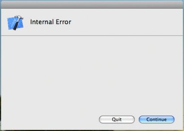

PhoneGap (Cordova) and the Command Line
PhoneGap Meetup Vancouver 09/2012
Fil Maj, Master Exploder, Adobe
@filmaj
What I Do
- Work on Apache Cordova
- Drink beer
- Play ping pong
IDEs Suck
Xcode. My arch-nemesis.
IDEs Suck, continued
Eclipse. No.

Use the command line, Luke
Cordova/PhoneGap has create and debug commands!
$ cd cordova-ios
$ ./bin/create ~/apps/myIosCordovaApp ca.filmaj.cordovaios MyIosCordovaApp
$ cd ~/apps/myIosCordovaApp
$ ./cordova/debug
$ ./cordova/emulate
Plugins

- Add native capabilities
- Exposed via a consistent JavaScript API
- Can be cross-platform, doesn't have to be
Plugin Specification
http://github.com/alunny/cordova-plugin-specCLI + Plugins
CLI, turned up to 11

WARNING: Incoming Live Demo
Thanks eh
http://github.com/filmaj/cordova-client
http://github.com/ghughes/fruitstrap